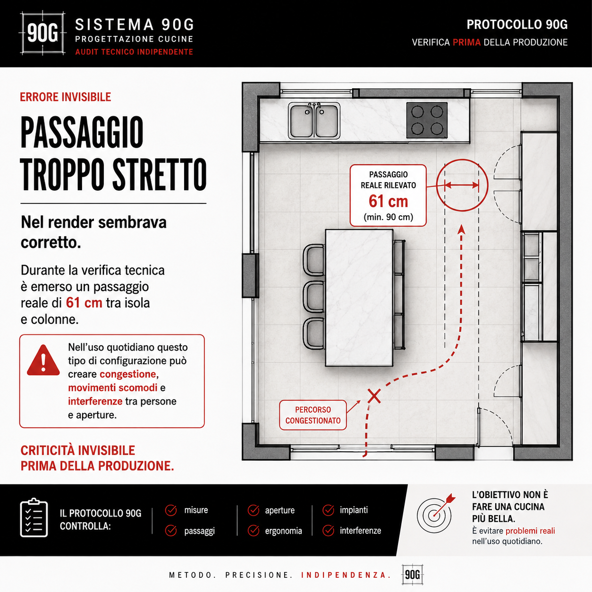
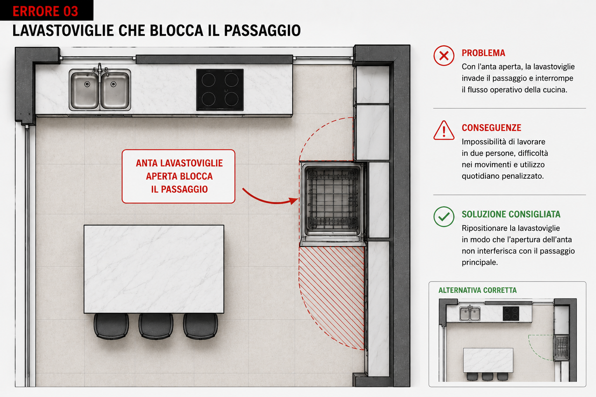
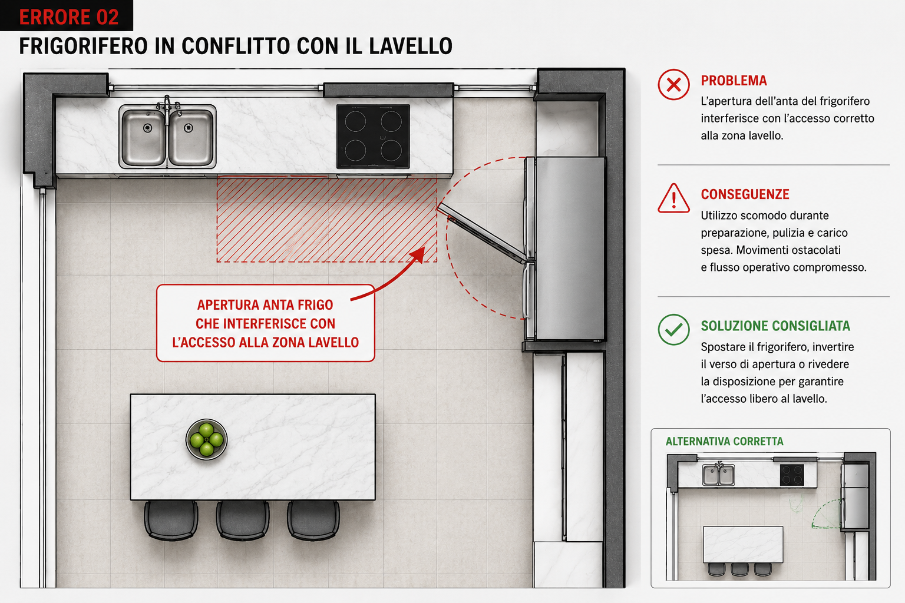

Passaggi troppo stretti
Quando colonne, isola e aperture si avvicinano, pochi centimetri possono trasformare un percorso in un punto congestionato.

Audit tecnico indipendente
Prima di ordinare, controlliamo misure, passaggi, aperture, impianti ed ergonomia per individuare errori che nel render spesso non si vedono.
Prima dell'ordine
Il problema è evitare errori reali nell'uso quotidiano: ante che si bloccano, passaggi ridotti, lavastoviglie che invade il percorso, prese nel punto sbagliato o elettrodomestici che interferiscono tra loro.
Criticità invisibili
Quando colonne, isola e aperture si avvicinano, pochi centimetri possono trasformare un percorso in un punto congestionato.
Frigo, forno, lavastoviglie, cassetti e sportelli devono essere verificati aperti, non solo chiusi nel disegno.
Prese, scarichi e attacchi possono sembrare dettagli, ma se cadono nel punto sbagliato generano costi e modifiche in cantiere.
Esempio reale di controllo
La verifica 90G osserva la cucina mentre viene usata: ante aperte, persone in movimento, zone operative e accessi principali.

Protocollo 90G

Output
Il report evidenzia criticità, interferenze e osservazioni operative prima che la cucina venga ordinata o prodotta.
Quando usarlo
Hai una piantina o un preventivo e vuoi un controllo prima della conferma.
Stai valutando una cucina con isola, colonne, passaggi stretti o molti elettrodomestici.
Vuoi un parere tecnico indipendente, non un secondo preventivo commerciale.
Piantina, render, schema cucina o PDF del progetto.
Controllo di misure, passaggi, aperture, impianti e uso reale.
Ricevi un documento chiaro con criticità e osservazioni operative.
Verifica prima di ordinare
Invia la piantina o il PDF del progetto. Ti diciamo cosa va controllato prima della produzione.
Invia il progetto su WhatsApp